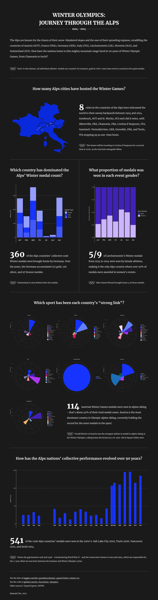

visualizing the winter olympics
overview
Since doing my first infographic project in high school, I've been a recreational data visualization and data journalism fiend. I decided to learn R in the summer of 2021 and combine it with another recreational love—the Winter Olympics—to make this infographic. All visualizations were made in R; layout and typography done in Figma.
back to homepage